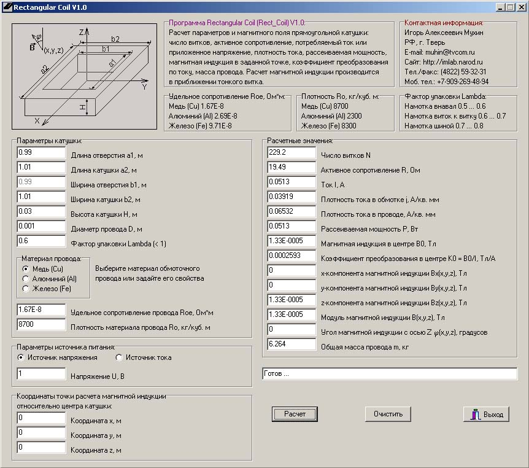
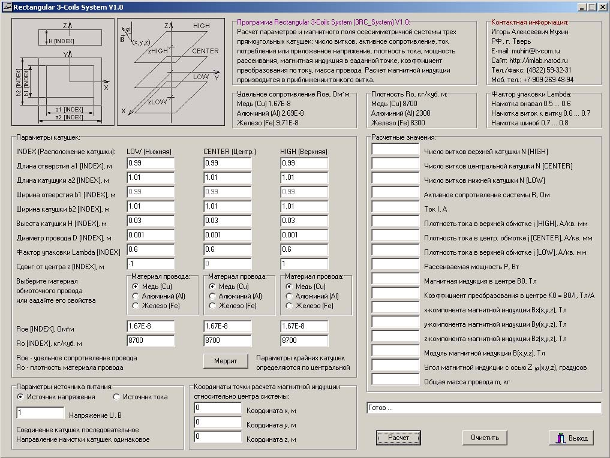

Расчет параметров и индукции магнитного поля систем
соосных прямоугольных катушек.
Программы Rectangular Coil и
Rectangular 3-Coils System
1. Введение
В практике физического или биологического эксперимента зачастую требуется создание в достаточно большом объеме (порядка 0.1 ... 1.0 кубометра) однородного магнитного поля. Это поле может использоваться либо для компенсации магнитного поля Земли, либо для воздействия на изучаемые объекты. Соответственно, напряженность генерируемого магнитного поля должна быть сопоставима с напряженностью магнитного поля Земли или превышать ее в несколько раз.
Для генерации однородного магнитного поля могут использоваться катушки Гельмгольца (Helmholtz) [7], которые в простом случае представляют собой два одинаковых кольцевых витка, соединенных между собой последовательно и расположенных на расстоянии радиуса витка друг от друга. При больших размерах системы (порядка метра и больше), а также при построении систем, способных генерировать магнитное поле по двум или трем координатам, технологически удобнее использовать квадратные катушки, которые представляют собой частный случай катушек прямоугольных.
2. Прямоугольная катушка
Прямоугольная катушка – соленоид с центральным отверстием в форме прямоугольного параллелепипеда. Внешняя форма прямоугольной катушки при небольшой толщине обмотки приближается к форме прямоугольного параллелепипеда. Если толщина обмотки большая, внешняя форма такой катушки приближается к форме цилиндра. Эскиз прямоугольной катушки с обозначениями основных размеров показан на рис. 2.1.
Рис. 2.1. Эскиз прямоугольной катушки: a1 – длина отверстия, a2 – длина катушки, a – средняя длина катушки, b1 – ширина отверстия, b2 – ширина катушки, b – средняя ширина катушки, H – высота катушки.
Параметры прямоугольной катушки:
Длина отверстия a1
Длина катушки a2
Средняя длина катушки a:

Ширина отверстия b1
Ширина катушки b2
Средняя ширина катушки b:

Толщина обмотки может считаться постоянной, поэтому выполняется соотношение:

Таким образом, один из параметров a1, a2, b1, b2 является зависимым от трех остальных. Например:
Средняя ширина катушки b:

Высота катушки H
Диаметр обмоточного провода D
Фактор упаковки (коэффициент заполнения)
l =
LAMBDA = Lambda (отношение площади, занятой
проводом в поперечном сечении обмотки без учета изоляции, к площади поперечного
сечения обмотки) [6]
Удельное сопротивление обмоточного провода
rE
= Roe
Плотность материала обмоточного провода
r
= Ro
Расчет индукции магнитного поля прямоугольной катушки с обмоткой, толщина которой составляет до 5 ... 10 % от поперечных размеров, с достаточно хорошей точностью может быть выполнен в приближении тонкого витка, проходящего по центру обмотки, с током, равным ампер-виткам катушки.
3. Программа Rectangular Coil версия 1.0 для операционной системы Windows

Рис. 3.1. Рабочее окно программы Rectangular Coil версии 1.0.
Программа Rectangular Coil (расчет параметров и индукции магнитного поля прямоугольной катушки) разрабатывалась и проверялась с операционной системой (ОС) Windows XP.
Исходные данные:
a1 - длина отверстия катушки, м
a2 - длина катушки, м
b2 - ширина катушки, м
H - высота катушки, м
D - диаметр обмоточного провода без изоляции (для проводов прямоугольного
сечения производится пересчет по формуле D=(4s/p)1/2,
где s - площадь поперечного сечения провода, м2), м
Lambda - фактор упаковки
Материал провода может быть выбран из предложенного списка (медь, алюминий,
железо), либо его свойства могут быть заданы вручную:
Roe - удельное сопротивление материала провода, Ом
∙ м
Ro - плотность материала провода, кг/м3
Источник питания может быть либо источником постоянного напряжения, либо
источником постоянного тока:
U - величина приложенного напряжения, В
I - величина тока через катушку, А
x - абсцисса точки (относительно центра катушки) расчета компонент магнитной
индукции, м
y - ордината точки (относительно центра катушки)
расчета компонент магнитной индукции, м
z - апликата точки (относительно центра катушки) расчета компонент магнитной
индукции, м
Расчетные данные:
N - число витков катушки
R - активное сопротивление обмотки катушки, Ом
I - ток через обмотку катушки, А (если используется
источник напряжения)
U - напряжение на обмотке катушки, В (если
используется источник тока)
j - плотность тока в обмотке катушки, А/мм2
Плотность тока в обмоточном проводе, А/мм2
P - рассеиваемая в обмотке мощность, Вт
B0 - магнитная индукция в центре катушки, Тл
K0 - коэффициент преобразования в центре катушки (0,
0, 0) по току, Тл/А
Bx (x, y, z) - x-компонента
магнитной индукции в точке с координатами (x, y, z)
(относительно точки (0,
0, 0)), Тл
By (x, y, z) -
y-компонента магнитной индукции в точке с координатами
(x, y, z) (относительно точки (0,
0, 0)), Тл
Bz (x, y, z) -
z-компонента магнитной индукции в точке с координатами
(x, y, z) (относительно точки (0,
0, 0)), Тл
B (x, y, z) - модуль вектора
магнитной индукции в точке с координатами (x, y, z)
(относительно точки (0,
0, 0)), Тл
f (x, y,
z) - угол вектора магнитной индукции в точке с координатами (x,
y, z) с осью Z, градусов
m - масса обмоточного провода (без учета изоляции), кг
Программа Rectangular Coil позволяет рассчитывать по заданным геометрическим размерам прямоугольной катушки (a1, a2, b2, H), диаметру провода D и фактору упаковки Lambda: активное сопротивление R, число витков N, величину тока I в обмотке при заданном напряжении U или наоборот, плотность тока в обмотке j и в обмоточном проводе, рассеиваемую в обмотке мощность P, модуль и компоненты магнитной индукции в заданной точке пространства (x, y, z), угол между вектором магнитной индукции в точке (x, y, z) и осью Z, величину магнитной индукции B0 в центре катушки (0, 0, 0) и коэффициент преобразования K0 по току. Расчеты производятся в системе СИ в прямоугольной декартовой системе координат. Результаты выводятся на экран монитора.
Расчет индукции магнитного поля прямоугольной катушки выполняется в приближении тонкого витка, проходящего по центру обмотки, с током, равным ампер-виткам катушки. С помощью программы Rectangular Coil можно рассчитывать индукцию магнитного поля систем прямоугольных катушек, используя принцип суперпозиции [4].
Демо-версия программы Rect_Coil V1.0 Demo: Rect_Coil10d.rar (~177 Кбайт)
Демо-версия программы Rectangular Coil имеет ограничение по заданию координат точки расчета магнитной индукции. Расчет магнитной индукции производится только в центре катушки (x, y, z) = (0, 0, 0). Кроме того, источник питания может быть только источником напряжения. Файл Rect_Coil10d.rar необходимо распаковать в заранее созданную папку. Упаковка производилась с помощью WinRar 3.60. Результат распаковки: Rect_Coil10d.exe - исполняемый файл программы. После запуска программы можно вводить входные данные и производить расчет нажатием соответствующей кнопки. При вводе входных данных необходимо учитывать принятый в ОС формат разделителя для десятичной дроби – точка или запятая (например, 0.005 или 0,005). Если в ОС формат разделителя запятая, то ввод производится с запятой, в противном случае будет выдаваться сообщение об ошибке. Смена формата разделителя десятичной дроби в ОС: Мой компьютер - Панель управления - Язык и стандарты - Настройка - Установить разделитель целой и дробной части. Корректность расчета можно оценить по рис. 3.1.
4. Системы соосных прямоугольных катушек
Системы соосных прямоугольных (чаще - квадратных) катушек используются для создания однородного магнитного поля в достаточно большом объеме, составляющем существенную долю от объема, занимаемого самой системой. При этом доступ в такие системы может быть гораздо проще, чем в кольца Гельмгольца. Изготовление прямоугольных (и, в частности, квадратных) катушек больших размеров является более технологичным по сравнению с круглыми. Также из квадратных катушек проще строить двух- и трехкоординатные системы генерации магнитного поля.
Количество катушек в системе, генерирующей магнитное поле по одной координате, может быть равно двум (модификации катушек Гельмгольца [1, 7]), трем (система Меррита (Merritt) [1 - 3]), четырем (система Ли-Уайтинга (Lee-Whiting) [1], система Олдреда-Сколлара (Alldred and Scollar) [1] или система Меррита (Merritt) [1 - 3]), пяти (система Рабенса (Rubens) [1, 3]) и более. С увеличением числа катушек растет трудоемкость процесса изготовления, поэтому во многих случаях наиболее оптимальной является система трех квадратных катушек Меррита примерно одинакового размера с соотношением числа ампер-витков 39 : 20 : 39 [1 - 3], позволяющая существенно увеличить зону однородного магнитного поля по сравнению с двухкатушечной системой Гельмгольца сопоставимого размера.
Система прямоугольных катушек может быть охарактеризована посредством параметров отдельных катушек (п. 2) с учетом того, что геометрические размеры и свойства обмоточного провода могут отличаться от катушки к катушке. Дополнительным параметром является величина сдвига крайних катушек относительно центра средней катушки (точка с координатами (0, 0, 0)).
5. Программа Rectangular 3-Coils System версия 1.0 для операционной системы Windows

Рис. 5.1. Рабочее окно программы Rectangular 3-Coils System версии 1.0.
Программа Rectangular 3-Coils System (расчет параметров и индукции магнитного поля системы трех прямоугольных катушек), созданная на основе программы Rectangular Coil, разрабатывалась и проверялась с операционной системой (ОС) Windows XP.
Исходные данные:
Положение катушки в системе (верхняя, средняя, нижняя) характеризуется
параметром INDEX, который может принимать значения
LOW, CENTER и HIGH,
соответственно (INDEX = {LOW,
CENTER, HIGH}).
a1[INDEX] - длина отверстия
INDEX-катушки, м
a2[INDEX] - длина
INDEX-катушки, м
b2[INDEX] - ширина INDEX-катушки,
м
H[INDEX] - высота INDEX-катушки,
м
D[INDEX] - диаметр обмоточного провода
INDEX-катушки без изоляции
(для проводов прямоугольного сечения производится пересчет по формуле D=(4s/p)1/2,
где s - площадь поперечного сечения провода, м2), м
Lambda[INDEX] - фактор упаковки
INDEX-катушки
z[INDEX] - сдвиг INDEX-катушки
вдоль оси Z относительно центра системы (0, 0, 0),
который совпадает с центром центральной катушки, м
Материал провода для каждой катушки может быть выбран из предложенного списка
(медь, алюминий, железо), либо его свойства могут быть заданы вручную:
Roe[INDEX] - удельное сопротивление материала провода
INDEX-катушки, Ом ∙ м
Ro[INDEX] - плотность материала провода
INDEX-катушки, кг/м3
Кнопка "Меррит" может быть использована для облегчения построения трехкатушечной
системы Меррита. Достаточно задать свойства центральной катушки, затем после
нажатия на кнопку параметры крайних катушек будут пересчитаны в соответствии с
требуемыми свойствами системы Меррита.
Источник питания может быть либо источником постоянного напряжения, либо
источником постоянного тока:
U - значение приложенного напряжения, В
I - значение тока через катушку, А
x - абсцисса точки (относительно центра системы) расчета компонент магнитной
индукции, м
y - ордината точки (относительно центра катушки)
расчета компонент магнитной индукции, м
z - апликата точки (относительно центра катушки) расчета компонент магнитной
индукции, м
Расчетные данные:
N[INDEX] - число витков
INDEX-катушки
R - активное сопротивление системы (включение катушек последовательное), Ом
I - ток через систему катушек, А (если используется
источник напряжения)
U - напряжение на выводах системы катушек, В (если
используется источник тока)
j[INDEX] - плотность тока в обмотке
INDEX-катушки, А/мм2
P - рассеиваемая в системе катушек мощность, Вт
B0 - магнитная индукция в центре системы катушек, Тл
K0 - коэффициент преобразования в центре системы (0,
0, 0) по току, Тл/А
Bx (x, y, z) - x-компонента
магнитной индукции в точке с координатами (x, y, z)
(относительно точки (0,
0, 0)), Тл
By (x, y, z) -
y-компонента магнитной индукции в точке с координатами
(x, y, z) (относительно точки (0,
0, 0)), Тл
Bz (x, y, z) -
z-компонента магнитной индукции в точке с координатами
(x, y, z) (относительно точки (0,
0, 0)), Тл
B (x, y, z) - модуль вектора
магнитной индукции в точке с координатами (x, y, z)
(относительно точки (0,
0, 0)), Тл
f (x, y,
z) - угол вектора магнитной индукции в точке с координатами (x,
y, z) с осью Z, градусов
m - суммарная масса обмоточного провода (без учета
изоляции) всех катушек системы, кг (если отдельные катушки намотаны проводом из
разных материалов, считается суммарная масса провода без разделения по составу)
Программа Rectangular 3-Coils System позволяет рассчитывать по заданным геометрическим размерам отдельных прямоугольных катушек системы, диаметру провода и фактору упаковки: активное сопротивление системы R, число витков каждой катушки, величину тока I через систему при заданном напряжении U или наоборот, плотность тока в обмотках отдельных катушек, рассеиваемую в системе мощность P, модуль и компоненты магнитной индукции в заданной точке пространства (x, y, z), угол между вектором магнитной индукции в точке (x, y, z) и осью Z, величину магнитной индукции B0 в центре системы (0, 0, 0) и коэффициент преобразования K0 по току. Расчеты производятся в системе СИ в прямоугольной декартовой системе координат. Результаты выводятся на экран монитора.
Демо-версия программы 3RC_System V1.0 Demo: 3RC_System10d.rar (~181 Кбайт)
Демо-версия программы Rectangular 3-Coils System имеет ограничение по заданию координат точки расчета магнитной индукции. Расчет производится только для центра катушки (x, y, z) = (0, 0, 0). Кроме того, источник питания может быть только источником напряжения. Также не активна кнопка "Меррит". Файл 3RC_System10d.rar необходимо распаковать в заранее созданную папку. Упаковка производилась с помощью WinRar 3.60. Результат распаковки: 3RC_System10d.exe - исполняемый файл программы. После запуска программы можно вводить входные данные и производить расчет нажатием соответствующей кнопки. При вводе входных данных необходимо учитывать принятый в ОС формат разделителя для десятичной дроби – точка или запятая (например, 0.005 или 0,005). Если в ОС формат разделителя запятая, то ввод производится с запятой, в противном случае будет выдаваться сообщение об ошибке. Смена формата разделителя десятичной дроби в ОС: Мой компьютер - Панель управления - Язык и стандарты - Настройка - Установить разделитель целой и дробной части. Корректность расчета можно оценить по рис. 5.1.
Скопированные файлы могут быть проверены на отсутствие вирусного кода в режиме on-line [5].
По вопросу получения полных версий программ обращайтесь к автору (см. раздел Контактная информация). Цены приведены в разделе Форум .
Ссылки:
09.11.2014
Альтернативные источники
энергии
Компьютеры и
Интернет
Магнитные поля
Механотронные системы
Перспективные
разработки
Электроника и
технология